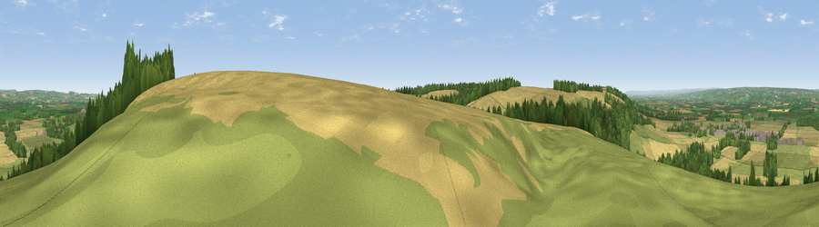

Viewpoint near Sherburn
#7818 in England · top 16% of its area beats it · near SherburnWhere it is
The exact computed spot (SE 97075 75575). Click the marker for map links.
The view, rendered

A 360° render of this exact spot computed from the terrain model, tree cover and land cover — summer colours, afternoon light, calibrated against photographs of famous viewpoints. Real trees, hedges and buildings will differ in detail.
The panorama
Grey silhouette: terrain skyline in each direction (720 bearings, Earth curvature and refraction included). Dashed green: skyline with trees (+15 m) and buildings (+8 m) as obstacles. Blue strip: how far the ground is visible on each bearing.
Where the view opens
Wedge length = distance to the farthest visible ground on that bearing (vegetation-aware). Rings at 10, 25 and 50 km.
What fills the view
44% cropland · 36% grassland · 18% woodland · 2% built-up
Angular shares of the visible panorama (visual magnitude), not map area. Landscape diversity 0.48 (0–1 Shannon).
Key numbers
More beautiful places nearby
The staircase of upgrades: each row has a higher view potential than everything closer. Driving times are estimates from straight-line distance, calibrated against real road routing — check an actual route before setting out.
| Place | Direction | Drive | Score |
|---|---|---|---|
| Viewpoint near Ganton | ENE · 2 km | ~6 min | 70.1 |
| Viewpoint near West Heslerton | W · 5 km | ~11 min | 70.5 |
| Viewpoint near Muston | ENE · 11 km | ~21 min | 70.9 |
| Seamer Beacon | NNE · 13 km | ~23 min | 76.9 |
| Olivers Mount | NNE · 13 km | ~24 min | 80.3 |
| Viewpoint near Ravenscar | N · 25 km | ~41 min | 82.7 |
| Viewpoint near Ravenscar | N · 26 km | ~42 min | 87.3 |
| Viewpoint near Ravenscar | N · 27 km | ~43 min | 90.0 |
54.16681, -0.51460 · source: screening · position refined by local search. Computed location — check access rights before visiting.